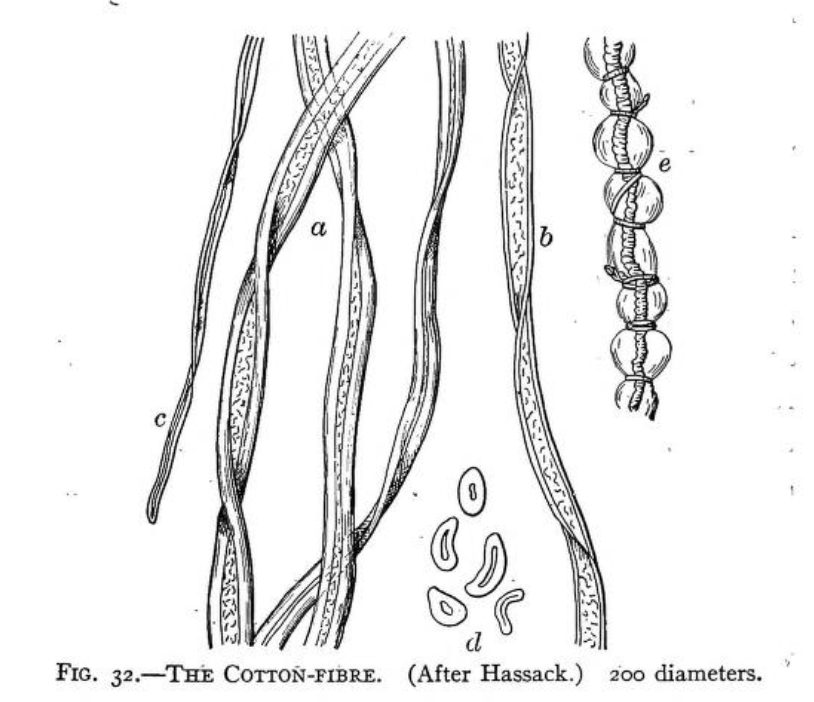

Cellulose Based #
Cellulose fibers are obtained from plants such as cotton, flax (linen), bamboo, and hemp.
Cotton #
Cotton is the most commonly used material in garments. This is partly because it is soft and breathable but also because it is stronger when it is wet, making it easy to wash in conventional washing machine. Different cottons have different qualities and grades, but they are a bit more consistent between varieties than different kinds of wool, for instance. Cotton takes a lot of water to grow, is hard on soil and and is susceptible to pests so while it is biodegradable, some have second thoughts when considering it as truly sustainable.

Harvesting #
Cotton is grown in fields and processed by hand or machines as shown here.
Sourcing
| Structure | Possibility to Source in this Structure |
|---|---|
| Fiber | Easy |
| Roving | Easy |
| Plied Yarn | Easy |
| Braided Rope | Easy |
| Filament | impossible |
| Knit | Easy |
| Woven | Easy |
| Non-Woven | unsure of any non-woven cotton products |
Linen / Flax #
Linen is a material that is derived from the flax plant. It is durable and incredible cool, so it has often been warn in warm climates. It is a stiffer fiber than cotton but grows in poor soil and with less water than cotton.
Harvesting #
Flax is grown in fields and processed by hand or machines as shown here. After it is uprooted, the flax is “retted” by leaving it out in the elements to break down a bit, which I find to be an interesting and natural part of the process.
Sourcing
| Structure | Possibility to Source in this Structure |
|---|---|
| Fiber | Easy |
| Roving | Easy |
| Plied Yarn | Easy |
| Braided Rope | Easy (those more common in similar materials like jute and hemp) |
| Filament | impossible |
| Knit | Easy |
| Woven | Easy (more common) |
| Non-Woven | unsure of any non-woven linen products |
****